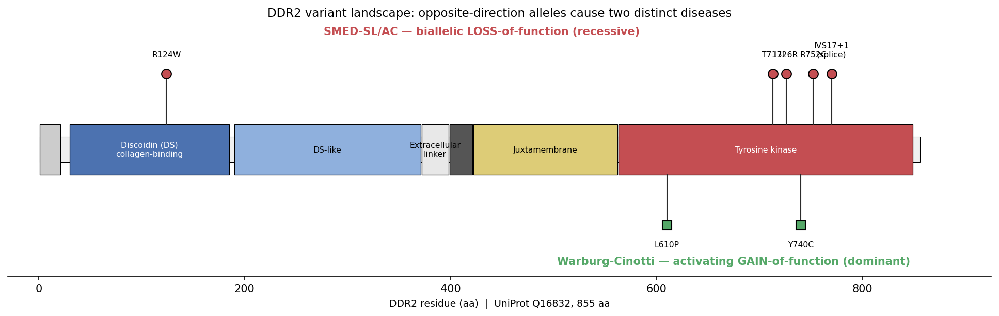

Spondylo-meta-epiphyseal dysplasia with short limbs and abnormal calcifications (SMED-SL, also SMED short limb-hand type or the Borochowitz-Cormier-Daire type; OMIM #271665) is a rare autosomal recessive skeletal dysplasia. It was described clinically in 1993 and its cause found in 2008: biallelic variants in DDR2, which encodes discoidin domain receptor 2, a plasma-membrane receptor tyrosine kinase whose ligand is fibrillar collagen. The skeletal picture is a generalised disturbance of endochondral growth rather than a defect of one bone or one segment. Affected children have disproportionate short stature with short limbs and short broad fingers, platyspondyly, and abnormal metaphyses and epiphyses; the "abnormal calcifications" of the name are premature and ectopic mineral deposits, and they are the feature that separates this dysplasia from the many other spondyloepimetaphyseal dysplasias radiographically. The mechanism is unusually well resolved for a disease with this few reported patients, because the disease variants were expressed and assayed rather than only inferred. DDR2 is activated by collagen binding at the cell surface and, in the growth plate, is the receptor through which the chondrocyte reads the collagen matrix it sits in; the Ddr2 knockout mouse is dwarfed, and it was that resemblance that nominated the gene. Every disease variant tested converges on loss of receptor function, but by two distinct routes. Kinase-domain missense alleles (p.T713I, p.I726R, p.R752C) and the frameshift p.S823Cfs*2 misfold and are held in the endoplasmic reticulum, so they never reach the membrane. The extracellular allele p.E113K traffics normally to the surface and fails at the next step, because Glu113 sits in the collagen-binding site. Both routes end at the same node: a chondrocyte that cannot transduce a collagen signal. That two-route structure is the mechanistically interesting part of the entity, and it is why this entry curates the trafficking defect and the ligand-binding defect as separate upstream nodes converging on one downstream chain, rather than collapsing them into a single "loss-of-function" claim.
Ask a research question about Spondyloepimetaphyseal Dysplasia Short Limb Abnormal Calcification Syndrome. OpenScientist will conduct autonomous deep research using the Disorder Mechanisms Knowledge Base and PubMed literature (typically 10-30 minutes).
Do not include personal health information in your question. Questions and results are cached in your browser's local storage.
name: Spondyloepimetaphyseal Dysplasia Short Limb Abnormal Calcification Syndrome
creation_date: "2026-09-02T00:00:00Z"
category: Mendelian
disease_term:
preferred_term: spondyloepimetaphyseal dysplasia-short limb-abnormal calcification syndrome
term:
id: MONDO:0010077
label: spondyloepimetaphyseal dysplasia-short limb-abnormal calcification syndrome
description: >
Spondylo-meta-epiphyseal dysplasia with short limbs and abnormal
calcifications (SMED-SL, also SMED short limb-hand type or the
Borochowitz-Cormier-Daire type; OMIM #271665) is a rare autosomal recessive
skeletal dysplasia. It was described clinically in 1993 and its cause found
in 2008: biallelic variants in DDR2, which encodes discoidin domain receptor
2, a plasma-membrane receptor tyrosine kinase whose ligand is fibrillar
collagen.
The skeletal picture is a generalised disturbance of endochondral growth
rather than a defect of one bone or one segment. Affected children have
disproportionate short stature with short limbs and short broad fingers,
platyspondyly, and abnormal metaphyses and epiphyses; the "abnormal
calcifications" of the name are premature and ectopic mineral deposits, and
they are the feature that separates this dysplasia from the many other
spondyloepimetaphyseal dysplasias radiographically.
The mechanism is unusually well resolved for a disease with this few
reported patients, because the disease variants were expressed and assayed
rather than only inferred. DDR2 is activated by collagen binding at the cell
surface and, in the growth plate, is the receptor through which the
chondrocyte reads the collagen matrix it sits in; the Ddr2 knockout mouse is
dwarfed, and it was that resemblance that nominated the gene. Every disease
variant tested converges on loss of receptor function, but by two distinct
routes. Kinase-domain missense alleles (p.T713I, p.I726R, p.R752C) and the
frameshift p.S823Cfs*2 misfold and are held in the endoplasmic reticulum, so
they never reach the membrane. The extracellular allele p.E113K traffics
normally to the surface and fails at the next step, because Glu113 sits in
the collagen-binding site. Both routes end at the same node: a chondrocyte
that cannot transduce a collagen signal.
That two-route structure is the mechanistically interesting part of the
entity, and it is why this entry curates the trafficking defect and the
ligand-binding defect as separate upstream nodes converging on one
downstream chain, rather than collapsing them into a single
"loss-of-function" claim.
synonyms:
- SMED-SL
- spondylo-meta-epiphyseal dysplasia with short limbs and abnormal calcifications
- spondylo-meta-epiphyseal dysplasia, short limb-hand type
- SMED short limb-hand type
- Borochowitz-Cormier-Daire type spondyloepimetaphyseal dysplasia
- DDR2-related skeletal dysplasia
parents:
- Spondyloepimetaphyseal dysplasia
- Osteochondrodysplasia
notes: >
Same gene, opposite direction, different disease. DDR2 also causes
Warburg-Cinotti syndrome, which is already curated here
(`kb/disorders/Warburg_Cinotti_Syndrome.yaml`, MONDO:0032579). The two are
allelic but not variants of one entity: Warburg-Cinotti is dominant and
driven by ligand-independent constitutive kinase activation, while SMED-SL
is recessive and driven by loss of receptor function. They are curated as
separate entries with opposite `functional_impact_category` values, and the
pair is a worked example of why that slot exists. Do not merge them, and do
not reason from one to the other about phenotype.
Naming, and why searching for this disease is awkward. The MONDO label
spells the entity "spondyloepimetaphyseal dysplasia-short limb-abnormal
calcification syndrome"; almost the entire primary literature writes
"spondylo-meta-epiphyseal dysplasia with short limbs and abnormal
calcifications", abbreviated SMED-SL. A literature search on the MONDO label
returns very little. Every snippet in this entry is therefore keyed on
SMED-SL or on DDR2, not on the MONDO string.
What this entry does not claim. The published cohorts are small and
consanguineous, drawn from Arab Muslim families near Jerusalem and from the
United Arab Emirates, with single Algerian and Pakistani patients and the
original Jewish family. No frequency is set on any phenotype: with this
ascertainment a percentage would describe the founder populations that were
sequenced, not the disease. The optic atrophy reported in one sibling pair
is curated as a phenotype because it is documented, but it is explicitly
marked in its description as a single-family observation whose relation to
the DDR2 lesion is not established.
No treatments block, and no GeneReviews chapter. Neither is an oversight.
Management of this disorder is supportive - there is no disease-modifying
therapy for a receptor whose loss has already shaped the skeleton in utero,
and genetic counselling matters here more than usual given the
consanguineous families in which it is ascertained. But none of the ten
cached references contains a clinical management statement that could be
quoted, and the deep-research report's treatment section cites no PMID and
offers three NCIT codes that do not name what it says they name. Rather
than manufacture a snippet, the reasoning is recorded here. A GeneReviews
chapter would have supplied it, so that was checked directly: PubMed
returns nothing for `spondylo-meta-epiphyseal dysplasia GeneReviews` or for
`DDR2 GeneReviews`. With roughly 22 reported patients worldwide, no chapter
exists.
Two wrong identifiers in the deep-research report, recorded so they are not
repeated. The openscientist report used for this entry proposed
MONDO:0009642 as the disease term; that CURIE resolves, so nothing about it
looks wrong, and it is `orofaciodigital syndrome type II`. The correct term,
MONDO:0010077, came from the curation stub. The report also gave the gene as
HGNC:2968, which does not resolve; DDR2 is `hgnc:2731`. Its citation
validation was clean (12 of 12 identifiers resolved, the one checked quote
valid), which is the point of running the term check separately: correct
citations say nothing about whether the ontology bindings are right.
A quoting limitation worth recording, because it shaped which snippets this
entry carries. The founding paper states the allelic series as "three missense
mutations c.2254 C > T [R752C], c. 2177 T > G [I726R], c.2138C > T [T713I] and
one splice site mutation [IVS17+1g > a] in the conserved sequence encoding the
tyrosine kinase domain". That sentence cannot be used as a snippet:
`linkml-reference-validator` strips bracketed spans from the query but keeps
them in the cached text, and `conf/reference_validator_config.yaml` only
exempts all-caps abbreviations and spans containing a percent sign, so
bracketed protein and cDNA variant designations - a near-universal convention
in genetics abstracts - fail as "Text part not found as substring". The
allelic-series claim is therefore evidenced from a bracket-free sentence in a
later paper, and the specific variants are carried in node descriptions rather
than in a quote.
prevalence:
- population: Worldwide, published cases
measure_type: CASES_IN_LITERATURE
prevalence_class: ULTRA_RARE
notes: >-
Fourteen patients had been reported between the 1993 clinical description
and the 2008 gene discovery, which then added six more from five
consanguineous families in the Jerusalem area plus single Algerian and
Pakistani patients. Later reports add individual families rather than
cohorts.
evidence:
- reference: PMID:19110212
reference_title: "Mutations in DDR2 gene cause SMED with short limbs and abnormal calcifications."
supports: SUPPORT
evidence_source: HUMAN_CLINICAL
snippet: "Since then, 14 affected patients have been reported."
explanation: >-
The published case count at the point of gene discovery, which is the
denominator this entry's rarity statement rests on.
- reference: PMID:19110212
reference_title: "Mutations in DDR2 gene cause SMED with short limbs and abnormal calcifications."
supports: SUPPORT
evidence_source: HUMAN_CLINICAL
snippet: "We diagnosed 6 patients from 5 different consanguineous Arab Muslim families from the Jerusalem area with SMED-SL."
explanation: >-
Records both the size and the consanguineous, geographically clustered
ascertainment of the gene-discovery cohort.
- reference: PMID:26463668
reference_title: "Novel DDR2 mutation identified by whole exome sequencing in a Moroccan patient with spondylo-meta-epiphyseal dysplasia, short limb-abnormal calcification type."
supports: SUPPORT
evidence_source: HUMAN_CLINICAL
snippet: "Twenty-two patients have been reported until now, but only five mutations (four missense and one splice-site) in the conserved sequence encoding the tyrosine kinase domain of the DDR2 gene has been identified."
explanation: >-
An updated case count seven years after gene discovery, together with
how few distinct alleles those patients represented at that point.
inheritance:
- name: Autosomal recessive
inheritance_term:
preferred_term: Autosomal recessive inheritance
term:
id: HP:0000007
label: Autosomal recessive inheritance
description: >
Biallelic DDR2 variants, homozygous in the consanguineous families in
which the gene was found and in the later United Arab Emirates families.
The recessive pattern is what distinguishes this entity from the dominant
gain-of-function DDR2 disorder, Warburg-Cinotti syndrome.
evidence:
- reference: PMID:20223752
reference_title: "Trafficking defects and loss of ligand binding are the underlying causes of all reported DDR2 missense mutations found in SMED-SL patients."
supports: SUPPORT
evidence_source: HUMAN_CLINICAL
snippet: "Spondylo-meta-epiphyseal dysplasia (SMED) with short limbs and abnormal calcifications (SMED-SL) is a rare, autosomal recessive human growth disorder"
explanation: >-
States the inheritance pattern together with the entity definition.
mechanistic_hypotheses:
- hypothesis_group_id: ddr2_collagen_sensing_loss
hypothesis_label: Loss of Chondrocyte Collagen Sensing Through DDR2
status: CANONICAL
description: >-
Every reported disease allele removes the chondrocyte's ability to
transduce a signal from fibrillar collagen through DDR2, either by never
delivering the receptor to the plasma membrane or by delivering a receptor
that cannot bind its ligand. The growth plate consequently loses a
matrix-derived proliferation and differentiation cue, endochondral growth
is disturbed, and the skeleton is short and abnormally mineralised.
CANONICAL because the receptor biology, the dwarfed Ddr2 knockout mouse,
the human genetics, and cell-based assays of every reported missense
allele all point the same way.
pathophysiology:
- name: Biallelic Loss-of-Function DDR2 Variants
biological_scale: MOLECULAR
description: >
The disease alleles cluster in two places that correspond to the two
failure routes below. Most sit in the conserved tyrosine kinase domain -
the three original missense alleles p.T713I, p.I726R and p.R752C, the
splice-site allele IVS17+1g>a, and the later frameshift p.S823Cfs*2 in
exon 18. One, p.E113K, sits instead in the extracellular discoidin domain,
in the collagen-binding site. Homozygosity mapping placed the locus in a
2.4 Mb interval on chromosome 1q23, and the phenotypic resemblance of the
Ddr2 knockout mouse is what selected DDR2 out of that interval.
genes:
- preferred_term: DDR2
term:
id: hgnc:2731
label: DDR2
modifier: DECREASED
genetic_context:
description: >-
Germline biallelic DDR2 alleles, homozygous in the consanguineous
families in which the disease has been characterised.
variant_origin: GERMLINE
zygosity: HOMOZYGOUS
functional_impact_category: LOSS_OF_FUNCTION
evidence:
- reference: PMID:24725993
reference_title: "A novel mutation in DDR2 causing spondylo-meta-epiphyseal dysplasia with short limbs and abnormal calcifications (SMED-SL) results in defective intra-cellular trafficking."
supports: SUPPORT
evidence_source: HUMAN_CLINICAL
snippet: "The rare autosomal genetic disorder, Spondylo-meta-epiphyseal dysplasia with short limbs and abnormal calcifications (SMED-SL), is reported to be caused by missense or splice site mutations in the human discoidin domain receptor 2 (DDR2) gene."
explanation: >-
The gene-disease assertion together with the allele classes reported.
The founding paper states that the three original missense alleles and
the splice-site allele all fall in the conserved tyrosine kinase domain,
but that sentence encloses each variant designation in square brackets
and so cannot currently be quoted verbatim - see this entry notes.
- reference: PMID:19110212
reference_title: "Mutations in DDR2 gene cause SMED with short limbs and abnormal calcifications."
supports: SUPPORT
evidence_source: HUMAN_CLINICAL
snippet: "Using a homozygosity mapping strategy, we located a candidate region on chromosome 1q23 spanning 2.4 Mb."
explanation: >-
The mapping step that localised the disease before the gene was named.
- reference: PMID:24725993
reference_title: "A novel mutation in DDR2 causing spondylo-meta-epiphyseal dysplasia with short limbs and abnormal calcifications (SMED-SL) results in defective intra-cellular trafficking."
supports: SUPPORT
evidence_source: HUMAN_CLINICAL
snippet: "DNA sequencing revealed a novel homozygous dinucleotide deletion mutation (c.2468_2469delCT) on exon 18 of the DDR2 gene in both patients."
explanation: >-
Extends the allelic series beyond missense to a frameshift allele, which
matters because it behaves like the kinase-domain missense alleles
rather than like a null with no protein.
- reference: PMID:36720430
reference_title: "Spondylo-meta-epiphyseal dysplasia (SMED), short limb-hand abnormal calcification type: Further expanding the mutational spectrum and dental findings of three new patients."
supports: SUPPORT
evidence_source: HUMAN_CLINICAL
snippet: "This unique phenotype is caused by biallelic loss-of-function variants in Discoidin domain receptor 2 gene (DDR2, MIM# 191311)."
explanation: >-
States the direction of effect and the zygosity requirement in one
sentence, which is what separates this disease from the dominant
gain-of-function DDR2 disorder.
- reference: PMID:36720430
reference_title: "Spondylo-meta-epiphyseal dysplasia (SMED), short limb-hand abnormal calcification type: Further expanding the mutational spectrum and dental findings of three new patients."
supports: SUPPORT
evidence_source: HUMAN_CLINICAL
snippet: "To date, only 10 pathogenic variants (six missense, two nonsense, one deletion, and one splice site) in DDR2 have been reported in patients with SMED-SL/AC."
explanation: >-
The size and composition of the whole reported allelic series as of
2023, which is the denominator for any statement about where the
variants sit.
downstream:
- target: DDR2 Retention in the Endoplasmic Reticulum
description: >-
Kinase-domain missense and frameshift alleles misfold and are held
before the plasma membrane.
hypothesis_groups:
- ddr2_collagen_sensing_loss
- target: Loss of DDR2 Collagen Binding at the Cell Surface
description: >-
The extracellular p.E113K allele reaches the membrane but cannot engage
its ligand.
hypothesis_groups:
- ddr2_collagen_sensing_loss
- name: DDR2 Retention in the Endoplasmic Reticulum
biological_scale: MOLECULAR
description: >
The first of the two failure routes, and the one that accounts for most
reported alleles. Expressed in mammalian cell lines, the kinase-domain
missense mutants p.T713I, p.I726R and p.R752C and the exon-18 frameshift
p.S823Cfs*2 are held in the endoplasmic reticulum instead of reaching the
plasma membrane, and the N-glycosylation profile of the retained protein
confirms it has not transited the Golgi. A receptor that never reaches the
surface cannot be activated by extracellular collagen however intact its
ligand-binding site is, so this is a loss-of-function mechanism by
mislocalisation rather than by loss of catalytic capacity.
cellular_components:
- preferred_term: endoplasmic reticulum
term:
id: GO:0005783
label: endoplasmic reticulum
evidence:
- reference: PMID:20223752
reference_title: "Trafficking defects and loss of ligand binding are the underlying causes of all reported DDR2 missense mutations found in SMED-SL patients."
supports: SUPPORT
evidence_source: IN_VITRO
snippet: "We found that all SMED-SL missense mutants were defective in collagen-induced receptor activation and that the three previously reported mutants (p.T713I, p.I726R and p.R752C) were retained in the endoplasmic reticulum."
explanation: >-
Establishes ER retention as the mechanism for the kinase-domain alleles,
in a cell-based assay of the actual patient variants.
- reference: PMID:24725993
reference_title: "A novel mutation in DDR2 causing spondylo-meta-epiphyseal dysplasia with short limbs and abnormal calcifications (SMED-SL) results in defective intra-cellular trafficking."
supports: SUPPORT
evidence_source: IN_VITRO
snippet: "it was found to be largely retained in the endoplasmic reticulum (ER), which was further supported by its N-glycosylation profile"
explanation: >-
Independent confirmation for a frameshift allele, with the glycosylation
profile as a second line of evidence that the protein never left the ER.
downstream:
- target: Failure of Collagen-Induced DDR2 Receptor Activation
description: >-
No receptor at the surface to be activated.
hypothesis_groups:
- ddr2_collagen_sensing_loss
- name: Loss of DDR2 Collagen Binding at the Cell Surface
biological_scale: MOLECULAR
description: >
The second failure route, established by a single assayed allele but
important because it dissociates trafficking from function. p.E113K
traffics to the plasma membrane exactly like wild-type DDR2 and still
fails to be activated, because Glu113 lies in the ligand-binding site
identified by structural work on the discoidin domain. The existence of
this allele is what shows that the disease is caused by loss of collagen
signalling and not, for instance, by an ER stress response to a misfolded
protein.
A second discoidin-domain allele, p.Arg124Trp, was later found in a
Moroccan patient by exome sequencing. It has not been assayed
functionally, so this entry does not assert that it fails the same way -
only that the disease alleles are not confined to the kinase domain, which
is what the founding series had suggested.
The domain biology explains why a residue here matters. The extracellular
region carries a collagen-binding discoidin domain whose amphiphilic
trench recognises a GVMGFO motif in fibrillar collagen; a substitution in
that trench removes ligand engagement without touching catalysis.
molecular_functions:
- preferred_term: collagen binding
modifier: DECREASED
term:
id: GO:0005518
label: collagen binding
evidence:
- reference: PMID:20223752
reference_title: "Trafficking defects and loss of ligand binding are the underlying causes of all reported DDR2 missense mutations found in SMED-SL patients."
supports: SUPPORT
evidence_source: IN_VITRO
snippet: "The novel mutant (p.E113K), in contrast, trafficked normally, like wild-type DDR2, but failed to bind collagen."
explanation: >-
The dissociation experiment: normal trafficking, absent ligand binding,
disease phenotype. This is the evidence that collagen sensing itself is
the lesion.
- reference: PMID:20223752
reference_title: "Trafficking defects and loss of ligand binding are the underlying causes of all reported DDR2 missense mutations found in SMED-SL patients."
supports: SUPPORT
evidence_source: IN_VITRO
snippet: "This finding is in agreement with our recent structural data identifying Glu113 as an important amino acid in the DDR2 ligand-binding site."
explanation: >-
Anchors the functional result to the structural position of the residue.
- reference: PMID:26463668
reference_title: "Novel DDR2 mutation identified by whole exome sequencing in a Moroccan patient with spondylo-meta-epiphyseal dysplasia, short limb-abnormal calcification type."
supports: SUPPORT
evidence_source: HUMAN_CLINICAL
snippet: "We report here a novel DDR2 missense mutation, c.370C > T (p.Arg124Trp) in a Moroccan girl with SMED, SL-AC, identified by whole exome sequencing."
explanation: >-
A second discoidin-domain allele, establishing that disease variants
occur outside the kinase domain. Its functional consequence has not been
assayed, so it supports the existence of this route rather than the
mechanism attributed to it.
- reference: PMID:23128141
reference_title: "Collagen recognition and transmembrane signalling by discoidin domain receptors."
supports: SUPPORT
evidence_source: OTHER
snippet: "The major DDR binding site in fibrillar collagens is a GVMGFO motif (O is hydroxyproline), which is recognised by an amphiphilic trench at the top of the DS domain."
explanation: >-
Identifies the structural feature that a discoidin-domain substitution
disrupts, which is what makes a variant here a ligand-binding lesion
rather than a folding one.
downstream:
- target: Failure of Collagen-Induced DDR2 Receptor Activation
description: >-
Receptor present but unable to engage fibrillar collagen.
hypothesis_groups:
- ddr2_collagen_sensing_loss
- name: Failure of Collagen-Induced DDR2 Receptor Activation
biological_scale: MOLECULAR
description: >
Where both routes converge. DDR2 is a receptor tyrosine kinase whose
ligand is fibrillar collagen rather than a soluble growth factor; ligand
engagement drives receptor autophosphorylation and downstream signalling.
Both classes of disease allele abolish collagen-induced activation, which
is the single functional statement that covers every variant reported so
far.
molecular_functions:
- preferred_term: transmembrane receptor protein tyrosine kinase activity
modifier: DECREASED
term:
id: GO:0004714
label: transmembrane receptor protein tyrosine kinase activity
biological_processes:
- preferred_term: peptidyl-tyrosine autophosphorylation
modifier: DECREASED
term:
id: GO:0038083
label: peptidyl-tyrosine autophosphorylation
evidence:
- reference: PMID:20223752
reference_title: "Trafficking defects and loss of ligand binding are the underlying causes of all reported DDR2 missense mutations found in SMED-SL patients."
supports: SUPPORT
evidence_source: IN_VITRO
snippet: "Our data thus demonstrate that SMED-SL can result from at least two different loss-of-function mechanisms: namely defects in DDR2 targeting to the plasma membrane or the loss of its ligand-binding activity."
explanation: >-
The authors' own statement of the two-route convergence this node
represents.
- reference: PMID:20223752
reference_title: "Trafficking defects and loss of ligand binding are the underlying causes of all reported DDR2 missense mutations found in SMED-SL patients."
supports: SUPPORT
evidence_source: OTHER
snippet: "DDR2 is a plasma membrane receptor tyrosine kinase that functions as a collagen receptor."
explanation: >-
Establishes what the receptor is and what activates it, which is the
premise of this node.
- reference: PMID:24725993
reference_title: "A novel mutation in DDR2 causing spondylo-meta-epiphyseal dysplasia with short limbs and abnormal calcifications (SMED-SL) results in defective intra-cellular trafficking."
supports: SUPPORT
evidence_source: IN_VITRO
snippet: "the mutant protein was found to be deficient in collagen-induced receptor activation"
explanation: >-
Confirms the convergent functional endpoint for the frameshift allele.
downstream:
- target: Disturbed Growth Plate Chondrocyte Proliferation and Endochondral Ossification
description: >-
Loss of the matrix-derived cue that the growth-plate chondrocyte reads
from the collagen around it.
hypothesis_groups:
- ddr2_collagen_sensing_loss
- name: Disturbed Growth Plate Chondrocyte Proliferation and Endochondral Ossification
biological_scale: TISSUE
description: >
The tissue-level consequence, and the node the skeletal phenotypes hang
from. In the growth plate the chondrocyte proliferates, hypertrophies and
is replaced by bone in a spatially ordered column, and DDR2 is one of the
receptors through which it senses the collagenous matrix it sits in.
Losing that signal disturbs the metaphyseal and epiphyseal architecture
where endochondral growth happens, shortens the long bones and the
vertebral bodies, and is accompanied by premature and ectopic
mineralisation.
The strongest independent support is the mouse: Ddr2 knockout animals are
dwarfed, and that phenotypic resemblance to the patients is what nominated
DDR2 as the candidate within the mapped interval before any human variant
was found. That makes it a prediction that succeeded rather than a
post-hoc analogy.
cell_types:
- preferred_term: growth plate chondrocyte
term:
id: CL:1000217
label: growth plate cartilage chondrocyte
locations:
- preferred_term: epiphyseal plate
term:
id: UBERON:0002516
label: epiphyseal plate
biological_processes:
- preferred_term: chondrocyte proliferation
modifier: DECREASED
term:
id: GO:0035988
label: chondrocyte proliferation
- preferred_term: endochondral ossification
modifier: ABNORMAL
term:
id: GO:0001958
label: endochondral ossification
evidence:
- reference: PMID:19110212
reference_title: "Mutations in DDR2 gene cause SMED with short limbs and abnormal calcifications."
supports: SUPPORT
evidence_source: MODEL_ORGANISM
snippet: "the similarity of the ddr2 knockout mouse to the SMED patients' phenotype prompted us to study this gene"
explanation: >-
The mouse-to-human phenotype match that selected the gene, and the
evidence that losing Ddr2 disturbs skeletal growth in a whole organism
rather than only in a transfected cell.
- reference: PMID:20223752
reference_title: "Trafficking defects and loss of ligand binding are the underlying causes of all reported DDR2 missense mutations found in SMED-SL patients."
supports: SUPPORT
evidence_source: HUMAN_CLINICAL
snippet: "characterized by disproportionate short stature, short limbs, short broad fingers, abnormal metaphyses and epiphyses, platyspondyly and premature calcifications"
explanation: >-
The clinical readout of this node: the affected structures are precisely
the sites of endochondral growth.
- reference: PMID:11375938
reference_title: "The collagen receptor DDR2 regulates proliferation and its elimination leads to dwarfism."
supports: SUPPORT
evidence_source: MODEL_ORGANISM
snippet: "This phenotype appears to be caused by reduced chondrocyte proliferation, rather than aberrant differentiation or function."
explanation: >-
Identifies which chondrocyte behaviour fails. The negative half of the
sentence is what makes the node specific: differentiation and function
are intact, so this is a proliferation defect and not a general
chondrocyte failure.
- reference: PMID:11375938
reference_title: "The collagen receptor DDR2 regulates proliferation and its elimination leads to dwarfism."
supports: SUPPORT
evidence_source: IN_VITRO
snippet: "a defect that is rescued by introduction of wild-type but not kinase-dead DDR2 receptor"
explanation: >-
The rescue-and-control experiment. Restoring the receptor restores
proliferation only when its kinase works, which is what ties the
proliferation defect to catalysis rather than to the receptor's presence
at the membrane.
- reference: PMID:35140200
reference_title: "The collagen receptor, discoidin domain receptor 2, functions in Gli1-positive skeletal progenitors and chondrocytes to control bone development."
supports: SUPPORT
evidence_source: MODEL_ORGANISM
snippet: "Expression and lineage analysis showed selective expression of Ddr2 at early stages of bone formation in the resting zone and proliferating chondrocytes and periosteum."
explanation: >-
Places the receptor in the exact growth-plate zones this node is about,
rather than in cartilage generally.
- reference: PMID:35140200
reference_title: "The collagen receptor, discoidin domain receptor 2, functions in Gli1-positive skeletal progenitors and chondrocytes to control bone development."
supports: SUPPORT
evidence_source: MODEL_ORGANISM
snippet: "A conditional deletion approach showed a requirement for Ddr2 in Gli1-positive skeletal progenitors and chondrocytes but not mature osteoblasts."
explanation: >-
Cell-autonomy, and its boundary: the requirement is in progenitors and
chondrocytes and not in mature osteoblasts, which is why this entry
models a growth-plate lesion rather than an ossification one.
downstream:
- target: Disproportionate Short Stature
description: Reduced endochondral growth of the long bones and vertebrae.
hypothesis_groups:
- ddr2_collagen_sensing_loss
- target: Platyspondyly
description: Disturbed endochondral growth of the vertebral bodies.
hypothesis_groups:
- ddr2_collagen_sensing_loss
- target: Abnormal Metaphyses and Epiphyses
description: Disturbed architecture at the ends of the long bones.
hypothesis_groups:
- ddr2_collagen_sensing_loss
- target: Short Broad Fingers
description: Reduced endochondral growth of the tubular bones of the hand.
hypothesis_groups:
- ddr2_collagen_sensing_loss
- target: Premature and Ectopic Calcification
description: >-
Mineral deposited early and in the wrong places, the radiographic
feature that names the disorder.
hypothesis_groups:
- ddr2_collagen_sensing_loss
- target: Impaired Cranial Base and Calvarial Growth
description: >-
The same growth-plate lesion in the synchondroses and sutures that build
the skull base and vault.
hypothesis_groups:
- ddr2_collagen_sensing_loss
- name: Impaired Cranial Base and Calvarial Growth
biological_scale: TISSUE
description: >
The craniofacial branch, and it is the same lesion in a different growth
centre rather than a separate mechanism. The skull base grows at
synchondroses, which are mirror-image growth plates with a central resting
zone, and the vault grows at sutures containing GLI1-positive progenitors.
Ddr2-deficient mice have impaired calvarial growth and frontal suture
formation together with cranial base hypoplasia from aberrant
chondrogenesis and delayed ossification at the synchondroses, and those
defects are accompanied by abnormal collagen fibril organisation and by
disturbed chondrocyte proliferation and polarisation.
That result matters for reading the human phenotype: the flat face, short
nose and retrognathia of this dysplasia are the predicted consequence of a
short cranial base rather than independent facial malformations, and they
are curated here as downstream of this node for that reason.
cell_types:
- preferred_term: chondrocyte
term:
id: CL:0000138
label: chondrocyte
biological_processes:
- preferred_term: chondrocyte proliferation
modifier: DECREASED
term:
id: GO:0035988
label: chondrocyte proliferation
evidence:
- reference: PMID:36656123
reference_title: "Control of craniofacial development by the collagen receptor, discoidin domain receptor 2."
supports: SUPPORT
evidence_source: MODEL_ORGANISM
snippet: "Ddr2-deficient mice exhibit defects in craniofacial bones including impaired calvarial growth and frontal suture formation, cranial base hypoplasia due to aberrant chondrogenesis and delayed ossification at growth plate synchondroses."
explanation: >-
The craniofacial phenotype in the model, resolved to the specific growth
centres involved.
- reference: PMID:36656123
reference_title: "Control of craniofacial development by the collagen receptor, discoidin domain receptor 2."
supports: SUPPORT
evidence_source: MODEL_ORGANISM
snippet: "These defects were associated with abnormal collagen fibril organization, chondrocyte proliferation and polarization."
explanation: >-
Links the craniofacial defect back to collagen and to chondrocyte
behaviour, which is what makes it the same mechanism as the long-bone
lesion rather than a second one.
- reference: PMID:36656123
reference_title: "Control of craniofacial development by the collagen receptor, discoidin domain receptor 2."
supports: SUPPORT
evidence_source: OTHER
snippet: "Mutations in the discoidin domain receptor 2 gene (DDR2), which encodes a non-integrin collagen receptor, are associated with human craniofacial abnormalities, such as midface hypoplasia and open fontanels."
explanation: >-
Establishes that the human phenotype includes craniofacial involvement,
which is what the mouse work is being used to explain.
downstream:
- target: Short Nose with Wide Nasal Bridge
description: Midface hypoplasia following a short cranial base.
hypothesis_groups:
- ddr2_collagen_sensing_loss
- target: Ocular Hypertelorism
description: Altered midfacial proportions.
hypothesis_groups:
- ddr2_collagen_sensing_loss
- target: Long Philtrum
description: Altered midfacial proportions.
hypothesis_groups:
- ddr2_collagen_sensing_loss
- target: Retrognathia and Micrognathia
description: Mandibular position and size following altered cranial base growth.
hypothesis_groups:
- ddr2_collagen_sensing_loss
phenotypes:
- category: Skeletal
name: Disproportionate Short Stature
description: >
Short-limbed rather than short-trunked disproportion, the presenting
feature in most reported patients and the reason "short limb-hand type"
entered the older name for the disorder.
phenotype_term:
preferred_term: Disproportionate short-limb short stature
term:
id: HP:0008873
label: Disproportionate short-limb short stature
evidence:
- reference: PMID:20223752
reference_title: "Trafficking defects and loss of ligand binding are the underlying causes of all reported DDR2 missense mutations found in SMED-SL patients."
supports: SUPPORT
evidence_source: HUMAN_CLINICAL
snippet: "characterized by disproportionate short stature, short limbs, short broad fingers, abnormal metaphyses and epiphyses, platyspondyly and premature calcifications"
explanation: >-
The disproportion and its limb-predominant pattern, stated as part of
the entity definition.
- category: Skeletal
name: Short Limbs
description: >
Short long bones, present from infancy. Together with the hand findings
this is the "short limb-hand" half of the older disease name.
phenotype_term:
preferred_term: Short long bone
term:
id: HP:0003026
label: Short long bone
evidence:
- reference: PMID:20223752
reference_title: "Trafficking defects and loss of ligand binding are the underlying causes of all reported DDR2 missense mutations found in SMED-SL patients."
supports: SUPPORT
evidence_source: HUMAN_CLINICAL
snippet: "Spondylo-meta-epiphyseal dysplasia (SMED) with short limbs and abnormal calcifications (SMED-SL) is a rare, autosomal recessive human growth disorder"
explanation: >-
Short limbs are part of the entity name and definition.
- category: Skeletal
name: Short Broad Fingers
description: >
Short, broad tubular bones of the hand. Distinct from the generalised limb
shortening in that it is the hand finding radiologists use to recognise
the dysplasia.
phenotype_term:
preferred_term: Brachydactyly
term:
id: HP:0001156
label: Brachydactyly
evidence:
- reference: PMID:20223752
reference_title: "Trafficking defects and loss of ligand binding are the underlying causes of all reported DDR2 missense mutations found in SMED-SL patients."
supports: SUPPORT
evidence_source: HUMAN_CLINICAL
snippet: "characterized by disproportionate short stature, short limbs, short broad fingers, abnormal metaphyses and epiphyses, platyspondyly and premature calcifications"
explanation: >-
The hand phenotype, quoted from the entity definition.
- category: Skeletal
name: Platyspondyly
description: >
Flattened vertebral bodies, the "spondylo" component of the dysplasia's
name and the reason it is classified with the spondyloepimetaphyseal
rather than the purely metaphyseal dysplasias.
phenotype_term:
preferred_term: Platyspondyly
term:
id: HP:0000926
label: Platyspondyly
evidence:
- reference: PMID:20223752
reference_title: "Trafficking defects and loss of ligand binding are the underlying causes of all reported DDR2 missense mutations found in SMED-SL patients."
supports: SUPPORT
evidence_source: HUMAN_CLINICAL
snippet: "abnormal metaphyses and epiphyses, platyspondyly and premature calcifications"
explanation: >-
Documents platyspondyly as a defining radiographic feature.
- category: Skeletal
name: Abnormal Metaphyses and Epiphyses
description: >
Metaphyseal and epiphyseal dysplasia, the "meta-epiphyseal" component.
These are the regions where endochondral growth happens, which is why they
are the sites the DDR2 lesion is read out in.
phenotype_term:
preferred_term: Abnormal metaphysis morphology
term:
id: HP:0000944
label: Abnormal metaphysis morphology
evidence:
- reference: PMID:20223752
reference_title: "Trafficking defects and loss of ligand binding are the underlying causes of all reported DDR2 missense mutations found in SMED-SL patients."
supports: SUPPORT
evidence_source: HUMAN_CLINICAL
snippet: "short broad fingers, abnormal metaphyses and epiphyses, platyspondyly and premature calcifications"
explanation: >-
Documents both metaphyseal and epiphyseal involvement. The HP binding
here names the metaphysis only; the epiphyseal component is carried by
the separate epiphyseal phenotype below.
- category: Skeletal
name: Abnormal Epiphyses
description: >
Epiphyseal dysplasia, curated separately from the metaphyseal finding
because HPO has no single term covering both and collapsing them would
lose one of the two.
phenotype_term:
preferred_term: Abnormal epiphysis morphology
term:
id: HP:0005930
label: Abnormal epiphysis morphology
evidence:
- reference: PMID:20223752
reference_title: "Trafficking defects and loss of ligand binding are the underlying causes of all reported DDR2 missense mutations found in SMED-SL patients."
supports: SUPPORT
evidence_source: HUMAN_CLINICAL
snippet: "short broad fingers, abnormal metaphyses and epiphyses, platyspondyly and premature calcifications"
explanation: >-
The same clause carries the epiphyseal claim; it is quoted here for the
epiphyseal phenotype and above for the metaphyseal one.
- category: Skeletal
name: Premature and Ectopic Calcification
description: >
Mineral deposited earlier than expected and outside the normal ossific
sequence. This is the discriminating feature of the entity: it is what
"abnormal calcification" in the disease name refers to, and what separates
SMED-SL from the many other spondyloepimetaphyseal dysplasias on
radiographs.
phenotype_term:
preferred_term: Ectopic calcification
term:
id: HP:0010766
label: Ectopic calcification
evidence:
- reference: PMID:20223752
reference_title: "Trafficking defects and loss of ligand binding are the underlying causes of all reported DDR2 missense mutations found in SMED-SL patients."
supports: SUPPORT
evidence_source: HUMAN_CLINICAL
snippet: "abnormal metaphyses and epiphyses, platyspondyly and premature calcifications"
explanation: >-
Documents the premature calcification that names the disorder.
- category: Ophthalmologic
name: Optic Atrophy with Visual Impairment
description: >
Reported in one of two affected siblings in a single United Arab Emirates
family carrying the p.S823Cfs*2 allele, and described by the authors as an
addition to the typical picture rather than part of it. Curated because it
is documented, with the explicit caveat that it rests on one family and
its relationship to the DDR2 lesion is not established. Do not treat it as
a core feature of the disorder.
phenotype_term:
preferred_term: Optic atrophy
term:
id: HP:0000648
label: Optic atrophy
evidence:
- reference: PMID:24725993
reference_title: "A novel mutation in DDR2 causing spondylo-meta-epiphyseal dysplasia with short limbs and abnormal calcifications (SMED-SL) results in defective intra-cellular trafficking."
supports: SUPPORT
evidence_source: HUMAN_CLINICAL
snippet: "In addition to the typical features of SMED-SL, one of the patients has an eye phenotype including visual impairment due to optic atrophy."
explanation: >-
The single report of this finding, quoted with the authors' own framing
that it is additional to the typical phenotype.
- category: Craniofacial
name: Short Nose with Wide Nasal Bridge
description: >
Part of the facial gestalt described in the founding clinical report: a
short nose with a wide nasal bridge and wide nostrils. Curated as a
downstream consequence of impaired cranial base growth rather than as an
independent malformation.
phenotype_term:
preferred_term: Short nose
term:
id: HP:0003196
label: Short nose
evidence:
- reference: PMID:8434618
reference_title: "Spondylo-meta-epiphyseal dysplasia (SMED), short limb-hand type: a congenital familial skeletal dysplasia with distinctive features and histopathology."
supports: SUPPORT
evidence_source: HUMAN_CLINICAL
snippet: "a short nose with wide nasal bridge and wide nostrils"
explanation: >-
The nasal findings quoted from the clinical description that defined the
entity.
- category: Craniofacial
name: Ocular Hypertelorism
phenotype_term:
preferred_term: Hypertelorism
term:
id: HP:0000316
label: Hypertelorism
description: >
Increased interorbital distance, part of the same facial gestalt.
evidence:
- reference: PMID:8434618
reference_title: "Spondylo-meta-epiphyseal dysplasia (SMED), short limb-hand type: a congenital familial skeletal dysplasia with distinctive features and histopathology."
supports: SUPPORT
evidence_source: HUMAN_CLINICAL
snippet: "Clinical abnormalities include small stature with short limbs including short hands, a short nose with wide nasal bridge and wide nostrils, a long philtrum, ocular hypertelorism, retro/micrognathia, and a narrow chest."
explanation: >-
The full clinical description, quoted here for hypertelorism and reused
below for the other features it lists.
- category: Craniofacial
name: Long Philtrum
phenotype_term:
preferred_term: Long philtrum
term:
id: HP:0000343
label: Long philtrum
description: >
Increased distance between nose and upper lip, part of the facial gestalt.
evidence:
- reference: PMID:8434618
reference_title: "Spondylo-meta-epiphyseal dysplasia (SMED), short limb-hand type: a congenital familial skeletal dysplasia with distinctive features and histopathology."
supports: SUPPORT
evidence_source: HUMAN_CLINICAL
snippet: "Clinical abnormalities include small stature with short limbs including short hands, a short nose with wide nasal bridge and wide nostrils, a long philtrum, ocular hypertelorism, retro/micrognathia, and a narrow chest."
explanation: >-
The same clinical description, quoted for the philtrum.
- category: Craniofacial
name: Retrognathia and Micrognathia
phenotype_term:
preferred_term: Retrognathia
term:
id: HP:0000278
label: Retrognathia
description: >
The founding report describes retro- and micrognathia together. The
binding here is to retrognathia, which is the positional finding; the size
component is described in this text rather than bound separately, because
the source does not distinguish which patients had which.
evidence:
- reference: PMID:8434618
reference_title: "Spondylo-meta-epiphyseal dysplasia (SMED), short limb-hand type: a congenital familial skeletal dysplasia with distinctive features and histopathology."
supports: SUPPORT
evidence_source: HUMAN_CLINICAL
snippet: "Clinical abnormalities include small stature with short limbs including short hands, a short nose with wide nasal bridge and wide nostrils, a long philtrum, ocular hypertelorism, retro/micrognathia, and a narrow chest."
explanation: >-
The same clinical description, quoted for the mandibular findings and
showing that the source reports them as a combined observation.
- category: Skeletal
name: Narrow Chest
phenotype_term:
preferred_term: Narrow chest
term:
id: HP:0000774
label: Narrow chest
description: >
Thoracic narrowing accompanying the short ribs. Worth noting clinically
because in short-rib dysplasias it is the feature that determines
respiratory outcome, although the cited sources do not report respiratory
compromise in this disorder.
evidence:
- reference: PMID:8434618
reference_title: "Spondylo-meta-epiphyseal dysplasia (SMED), short limb-hand type: a congenital familial skeletal dysplasia with distinctive features and histopathology."
supports: SUPPORT
evidence_source: HUMAN_CLINICAL
snippet: "Clinical abnormalities include small stature with short limbs including short hands, a short nose with wide nasal bridge and wide nostrils, a long philtrum, ocular hypertelorism, retro/micrognathia, and a narrow chest."
explanation: >-
The same clinical description, quoted for the chest.
- category: Skeletal
name: Short Ribs
phenotype_term:
preferred_term: Short ribs
term:
id: HP:0000773
label: Short ribs
description: >
A radiographic feature of the original series, and the anatomical basis of
the narrow chest.
evidence:
- reference: PMID:8434618
reference_title: "Spondylo-meta-epiphyseal dysplasia (SMED), short limb-hand type: a congenital familial skeletal dysplasia with distinctive features and histopathology."
supports: SUPPORT
evidence_source: HUMAN_CLINICAL
snippet: "Radiological abnormalities include platyspondyly, short tubular bones with very abnormal metaphyses and epiphyses beyond early infancy, short ribs, and a typical evolution of bony changes over time."
explanation: >-
The radiographic description, which also records that the bony changes
evolve with age rather than being static.
- category: Dental
name: Abnormal Dentition
phenotype_term:
preferred_term: Abnormality of the dentition
term:
id: HP:0000164
label: Abnormality of the dentition
description: >
Orodental findings have been described in only six patients, so this is
recorded as a recognised but sparsely documented part of the phenotype
rather than an expected feature. The report adding it is explicit that
dental involvement had been noted before but rarely characterised.
evidence:
- reference: PMID:36720430
reference_title: "Spondylo-meta-epiphyseal dysplasia (SMED), short limb-hand abnormal calcification type: Further expanding the mutational spectrum and dental findings of three new patients."
supports: SUPPORT
evidence_source: HUMAN_CLINICAL
snippet: "Although abnormal dentition has previously been reported, orodental findings were described in only six patients with SMED-SL/AC."
explanation: >-
Documents dental involvement and states exactly how thin the evidence
for it is, which is why no frequency is set.
histopathology:
- name: Sparse Cartilage Matrix with Degenerating Chondrocytes in Dense Amorphous Material
description: >
The chondro-osseous morphology from the founding report, studied in one
patient. It is the microscopic counterpart of the "abnormal calcification"
in the disease name: chondrocytes are degenerating and are surrounded by
dense amorphous material, in a matrix that is sparse rather than
abundant. Read alongside the mouse work showing abnormal collagen fibril
organisation, it suggests the mineral is being deposited into a
disorganised matrix rather than an excess of matrix being mineralised, but
the cited sources do not establish that and the mechanism remains open.
evidence:
- reference: PMID:8434618
reference_title: "Spondylo-meta-epiphyseal dysplasia (SMED), short limb-hand type: a congenital familial skeletal dysplasia with distinctive features and histopathology."
supports: SUPPORT
evidence_source: HUMAN_CLINICAL
snippet: "Chondroosseous morphology and ultrastructure document sparse matrix and degenerating chondrocytes surrounded by dense amorphous material in the 1 patient studied."
explanation: >-
The histopathological finding with its own denominator stated by the
authors, which is one patient.
diagnosis:
- name: Skeletal Radiographic Evaluation
description: >-
The primary diagnostic modality, and the one that distinguishes this
dysplasia from the many other spondyloepimetaphyseal dysplasias.
Radiographs show platyspondyly, short tubular bones with markedly abnormal
metaphyses and epiphyses, and short ribs. Two features are diagnostically
load-bearing beyond the individual findings: the premature and ectopic
calcification that names the disorder, and the fact that the bony changes
evolve over time, so a single early-infancy film can be unrevealing and a
repeat study later is informative.
evidence:
- reference: PMID:8434618
reference_title: "Spondylo-meta-epiphyseal dysplasia (SMED), short limb-hand type: a congenital familial skeletal dysplasia with distinctive features and histopathology."
supports: SUPPORT
evidence_source: HUMAN_CLINICAL
snippet: "Radiological abnormalities include platyspondyly, short tubular bones with very abnormal metaphyses and epiphyses beyond early infancy, short ribs, and a typical evolution of bony changes over time."
explanation: >-
The radiographic pattern the diagnosis rests on, including the two
timing-dependent qualifiers - that the metaphyseal and epiphyseal
changes appear beyond early infancy, and that the picture evolves.
- name: Chondro-Osseous Histopathology
description: >-
Rarely needed now that molecular testing exists, but it is what
characterised the entity originally and it remains the only direct view of
the lesion. Cartilage matrix is sparse and chondrocytes are degenerating,
surrounded by dense amorphous material - the microscopic counterpart of
the abnormal calcification seen radiographically.
evidence:
- reference: PMID:8434618
reference_title: "Spondylo-meta-epiphyseal dysplasia (SMED), short limb-hand type: a congenital familial skeletal dysplasia with distinctive features and histopathology."
supports: SUPPORT
evidence_source: HUMAN_CLINICAL
snippet: "Chondroosseous morphology and ultrastructure document sparse matrix and degenerating chondrocytes surrounded by dense amorphous material in the 1 patient studied."
explanation: >-
The histopathological findings, with the authors' own statement that
they rest on a single patient.
- name: DDR2 Sequencing
description: >-
Definitive confirmation. Exome sequencing has been the productive route in
practice, because the radiographic differential across the
spondyloepimetaphyseal dysplasias is wide and the clinical picture alone
does not select DDR2 for single-gene testing.
evidence:
- reference: PMID:26463668
reference_title: "Novel DDR2 mutation identified by whole exome sequencing in a Moroccan patient with spondylo-meta-epiphyseal dysplasia, short limb-abnormal calcification type."
supports: SUPPORT
evidence_source: HUMAN_CLINICAL
snippet: "Our study has expanded the mutational spectrum of this rare disease and it has shown that exome sequencing is a powerful and cost-effective tool for the diagnosis of clinically heterogeneous disorders such as SMED."
explanation: >-
Establishes exome sequencing as the diagnostic route the authors
recommend, and says why: the clinical heterogeneity that makes targeted
single-gene testing unattractive.
- name: Homozygosity Mapping in Consanguineous Families
description: >-
How the gene was found, and still a usable approach where a consanguineous
family has more than one affected child and sequencing capacity is
limited. It is a family-level rather than an individual-level test.
evidence:
- reference: PMID:19110212
reference_title: "Mutations in DDR2 gene cause SMED with short limbs and abnormal calcifications."
supports: SUPPORT
evidence_source: HUMAN_CLINICAL
snippet: "Using a homozygosity mapping strategy, we located a candidate region on chromosome 1q23 spanning 2.4 Mb."
explanation: >-
The mapping approach that localised the disease, in the consanguineous
cohort structure this disorder is usually ascertained in.
progression:
- phase: Congenital and early infancy
notes: >-
The short-limbed disproportion and the facial gestalt are present at
birth. The metaphyseal and epiphyseal changes, by contrast, are described
as appearing beyond early infancy, so radiographs taken in the newborn
period can understate the picture.
evidence:
- reference: PMID:8434618
reference_title: "Spondylo-meta-epiphyseal dysplasia (SMED), short limb-hand type: a congenital familial skeletal dysplasia with distinctive features and histopathology."
supports: SUPPORT
evidence_source: HUMAN_CLINICAL
snippet: "short tubular bones with very abnormal metaphyses and epiphyses beyond early infancy"
explanation: >-
Records that the metaphyseal and epiphyseal abnormalities are not fully
present from birth, which is what makes the timing of imaging matter.
- phase: Childhood onwards
notes: >-
The radiographic picture changes with age in a way the founding report
calls characteristic. No source cited here quantifies growth trajectory,
adult height, or the timing of any complication, so nothing further is
claimed.
evidence:
- reference: PMID:8434618
reference_title: "Spondylo-meta-epiphyseal dysplasia (SMED), short limb-hand type: a congenital familial skeletal dysplasia with distinctive features and histopathology."
supports: SUPPORT
evidence_source: HUMAN_CLINICAL
snippet: "a typical evolution of bony changes over time"
explanation: >-
The progression claim in the authors' own words. It establishes that the
changes evolve and that the evolution is characteristic, without
specifying a trajectory.
genetic:
- name: DDR2
notes: >
The sole gene for this disorder, at 1q23.3, encoding discoidin domain
receptor tyrosine kinase 2. Biallelic loss-of-function variants cause
SMED-SL. Monoallelic gain-of-function variants in the same gene cause
Warburg-Cinotti syndrome, a dominant connective-tissue disorder with
corneal neovascularisation, keloids and acro-osteolysis, which is curated
separately here. The two directions of effect are the reason this gene
carries two entries rather than one.
gene_term:
preferred_term: DDR2
term:
id: hgnc:2731
label: DDR2
relationship_type: CAUSATIVE
variant_origin: GERMLINE
evidence:
- reference: PMID:24725993
reference_title: "A novel mutation in DDR2 causing spondylo-meta-epiphyseal dysplasia with short limbs and abnormal calcifications (SMED-SL) results in defective intra-cellular trafficking."
supports: SUPPORT
evidence_source: HUMAN_CLINICAL
snippet: "The rare autosomal genetic disorder, Spondylo-meta-epiphyseal dysplasia with short limbs and abnormal calcifications (SMED-SL), is reported to be caused by missense or splice site mutations in the human discoidin domain receptor 2 (DDR2) gene."
explanation: >-
The gene-disease assertion, naming DDR2 as the gene and missense and
splice-site variants as the allele classes.
animal_models:
- name: Ddr2-deficient mouse
species: Mouse
genotype: Ddr2 null
publication: PMID:11375938
description: >
The constitutive knockout, and the model that both nominated the gene and
identified the cellular defect. Its resemblance to the patients is what
selected DDR2 out of the mapped 1q23 interval before any human variant was
known, and it later showed which chondrocyte behaviour fails.
modeled_mechanisms:
- target: Disturbed Growth Plate Chondrocyte Proliferation and Endochondral Ossification
relationship: RECAPITULATES
fidelity: HIGH
description: >-
Dwarfism with shortened long bones, attributed specifically to reduced
chondrocyte proliferation rather than to defective differentiation or
function, and rescuable in fibroblasts by wild-type but not kinase-dead
receptor.
limitations: >-
A constitutive null, whereas most human alleles are missense proteins
that are made and then mislocalised, so the model cannot report on
whether the retained mutant protein does anything of its own. It also
does not address the premature calcification that names the human
disorder.
readouts:
- name: Growth plate chondrocyte proliferation
target: Disturbed Growth Plate Chondrocyte Proliferation and Endochondral Ossification
direction: DECREASED
interpretation: >-
Identifies proliferation, and not differentiation, as the failing
behaviour.
evidence:
- reference: PMID:11375938
reference_title: "The collagen receptor DDR2 regulates proliferation and its elimination leads to dwarfism."
supports: SUPPORT
evidence_source: MODEL_ORGANISM
snippet: "This phenotype appears to be caused by reduced chondrocyte proliferation, rather than aberrant differentiation or function."
explanation: The measurement and the alternatives the authors excluded.
- name: Fibroblast proliferation rescue by wild-type versus kinase-dead DDR2
target: Disturbed Growth Plate Chondrocyte Proliferation and Endochondral Ossification
direction: RESTORED
interpretation: >-
Restoration only with a catalytically competent receptor, which ties
the proliferative defect to kinase activity.
evidence:
- reference: PMID:11375938
reference_title: "The collagen receptor DDR2 regulates proliferation and its elimination leads to dwarfism."
supports: SUPPORT
evidence_source: IN_VITRO
snippet: "a defect that is rescued by introduction of wild-type but not kinase-dead DDR2 receptor"
explanation: The rescue with its built-in negative control.
evidence:
- reference: PMID:19110212
reference_title: "Mutations in DDR2 gene cause SMED with short limbs and abnormal calcifications."
supports: SUPPORT
evidence_source: MODEL_ORGANISM
snippet: "the similarity of the ddr2 knockout mouse to the SMED patients' phenotype prompted us to study this gene"
explanation: >-
States the phenotypic resemblance between the mouse and the patients,
and that it was strong enough to drive candidate-gene selection.
- target: Impaired Cranial Base and Calvarial Growth
relationship: RECAPITULATES
fidelity: HIGH
description: >-
Impaired calvarial growth and frontal suture formation with cranial base
hypoplasia from aberrant chondrogenesis and delayed synchondrosis
ossification.
limitations: >-
The human craniofacial phenotype is described clinically as a facial
gestalt rather than measured radiographically against the cranial base,
so the correspondence is between a mouse anatomical measurement and a
human clinical impression.
evidence:
- reference: PMID:36656123
reference_title: "Control of craniofacial development by the collagen receptor, discoidin domain receptor 2."
supports: SUPPORT
evidence_source: MODEL_ORGANISM
snippet: "Ddr2-deficient mice exhibit defects in craniofacial bones including impaired calvarial growth and frontal suture formation, cranial base hypoplasia due to aberrant chondrogenesis and delayed ossification at growth plate synchondroses."
explanation: The craniofacial phenotype resolved to specific growth centres.
- name: Ddr2 conditional knockout in Gli1-positive skeletal progenitors
species: Mouse
genotype: Tissue-specific Ddr2 deletion in Gli1-positive progenitors and chondrocytes
publication: PMID:35140200
description: >
Lineage-restricted deletion, which is what makes the requirement
cell-autonomous and locates it. Its most informative result is a negative
one: the requirement is in progenitors and chondrocytes and not in mature
osteoblasts, which is why this disease is modelled as a growth-plate
lesion rather than an ossification defect.
modeled_mechanisms:
- target: Disturbed Growth Plate Chondrocyte Proliferation and Endochondral Ossification
relationship: RECAPITULATES
fidelity: HIGH
description: >-
Conditional deletion in Gli1-positive skeletal progenitors and
chondrocytes reproduces the skeletal defect, and deletion in mature
osteoblasts does not.
limitations: >-
Complete deletion within a lineage, whereas patients carry hypomorphic
or misfolded receptors in every cell, so the model establishes where the
receptor is required rather than what a patient allele does.
evidence:
- reference: PMID:35140200
reference_title: "The collagen receptor, discoidin domain receptor 2, functions in Gli1-positive skeletal progenitors and chondrocytes to control bone development."
supports: SUPPORT
evidence_source: MODEL_ORGANISM
snippet: "A conditional deletion approach showed a requirement for Ddr2 in Gli1-positive skeletal progenitors and chondrocytes but not mature osteoblasts."
explanation: >-
The requirement and its boundary, which together localise the lesion.
- reference: PMID:35140200
reference_title: "The collagen receptor, discoidin domain receptor 2, functions in Gli1-positive skeletal progenitors and chondrocytes to control bone development."
supports: SUPPORT
evidence_source: MODEL_ORGANISM
snippet: "Ddr2 knockout in limb bud chondroprogenitors or purified marrow-derived skeletal progenitors inhibited chondrogenic or osteogenic differentiation, respectively."
explanation: >-
Cell-autonomy tested directly in isolated progenitor populations.
discussions:
- discussion_id: ddr2_calcification_mechanism_gap
kind: KNOWLEDGE_GAP
prompt: >-
How does loss of collagen-induced DDR2 signalling in the growth plate
produce premature and ectopic calcification, as opposed to simple growth
failure?
attaches_to:
- pathophysiology#Disturbed Growth Plate Chondrocyte Proliferation and Endochondral Ossification
rationale: >
The short stature, short limbs and abnormal metaphyses follow
straightforwardly from a growth-plate signalling defect. The premature
calcification does not: it is the feature that names the disorder and
distinguishes it radiographically, and no published work traces a path
from absent DDR2 collagen sensing to early or ectopic mineral deposition.
Both possibilities are open - a direct consequence of disordered matrix
handling by the chondrocyte, or a secondary effect of the disorganised
growth plate - and nothing in the cited literature discriminates between
them.
- discussion_id: ddr2_er_retained_allele_vs_null
kind: HUMAN_MODEL_MISMATCH
prompt: >-
Do the human missense alleles that are retained in the endoplasmic
reticulum behave as simple nulls in the growth plate, as the Ddr2 knockout
mouse assumes, or does the retained protein contribute something of its
own?
attaches_to:
- animal_models#Ddr2-deficient mouse
- pathophysiology#DDR2 Retention in the Endoplasmic Reticulum
rationale: >
The mouse evidence for this entity comes from a constitutive null, while
most human patients make a full-length or near-full-length receptor that
is then held in the ER. Those are not the same molecular situation: a
retained misfolded receptor tyrosine kinase can impose a load on ER
quality control that a null cannot, and the cell-based assays reported so
far establish where the mutant protein sits and that it is not activated
by collagen, not whether its presence has consequences beyond its absence
from the membrane. Whether this matters for the phenotype is untested, and
it is a live question precisely because the two mechanistic routes in this
entry differ on exactly this point: the p.E113K allele reaches the surface
and so imposes no such load, yet causes the same disease.
- discussion_id: ddr2_activity_rheostat
kind: KNOWLEDGE_GAP
attaches_to:
- pathophysiology#Failure of Collagen-Induced DDR2 Receptor Activation
prompt: >-
Is DDR2 activity a single continuous axis on which this disorder and
Warburg-Cinotti syndrome sit at opposite ends, and if so, is there a
threshold below which skeletal growth fails?
rationale: >
The two DDR2 diseases are an unusually clean opposed pair. Here biallelic
loss of collagen-induced activation gives short-limbed dwarfism; in
Warburg-Cinotti syndrome, heterozygous variants raise DDR2
phosphorylation and cause ligand-independent kinase activation, giving a
proliferative and destructive connective-tissue phenotype with no skeletal
dysplasia. Read together they suggest a dose-response axis rather than two
unrelated mechanisms. But nobody has measured residual activity across the
reported disease alleles on a common scale, so the axis is an
interpretation rather than a finding, and two practical questions follow
from it that cannot currently be answered: whether carriers of a single
loss-of-function allele have any measurable skeletal phenotype, and
whether a partial-activity allele would give an intermediate one.
Answering it would also bear on whether a kinase inhibitor such as
dasatinib, shown to block DDR2 autophosphorylation in Warburg-Cinotti
fibroblasts, is contraindicated in growing skeletons for the reason this
entry's mechanism implies.
evidence:
- reference: PMID:30449416
reference_title: "Recurrent, Activating Variants in the Receptor Tyrosine Kinase DDR2 Cause Warburg-Cinotti Syndrome."
supports: SUPPORT
evidence_source: HUMAN_CLINICAL
snippet: "Phosphorylation of DDR2 was increased in fibroblasts from affected individuals, suggesting reduced receptor autoinhibition and ligand-independent kinase activation."
explanation: >-
Establishes the opposite direction of effect in the allelic disorder,
which is the observation the rheostat reading rests on.
- reference: PMID:30449416
reference_title: "Recurrent, Activating Variants in the Receptor Tyrosine Kinase DDR2 Cause Warburg-Cinotti Syndrome."
supports: SUPPORT
evidence_source: IN_VITRO
snippet: "we found that the protein kinase inhibitor dasatinib prevented DDR2 autophosphorylation in fibroblasts, suggesting an approach to treatment"
explanation: >-
Records that DDR2 autophosphorylation is pharmacologically tractable,
which is what makes the direction of effect a practical question rather
than only a conceptual one.
Disease category: Mendelian (monogenic skeletal dysplasia) Causal gene: DDR2 (Discoidin Domain Receptor 2) Inheritance: Autosomal recessive Key identifiers: OMIM #271665 (phenotype), OMIM *191311 (gene); ORPHA:1425; MONDO:0009642; HGNC:2968; UniProt Q16832
Spondyloepimetaphyseal dysplasia, short limb–abnormal calcification type (SMED-SL/AC, also "spondylo-meta-epiphyseal dysplasia, short limb–hand type") is an ultra-rare, autosomal recessive congenital skeletal dysplasia. It is defined clinically by severe disproportionate short-limbed short stature, a distinctive facial gestalt (flat/short face, short nose with wide nasal bridge, long philtrum, ocular hypertelorism, micro-/retrognathia, narrow chest), platyspondyly, markedly abnormal metaphyses and epiphyses, short ribs, and the hallmark feature of premature/abnormal calcification. The disorder is caused by biallelic loss-of-function variants in DDR2, the gene encoding Discoidin Domain Receptor 2, a collagen-activated receptor tyrosine kinase (RTK). This report synthesizes six confirmed findings and 18 reviewed papers into a coherent mechanistic and clinical account.
The central mechanistic insight is that DDR2 is a collagen sensor required for growth-plate chondrocyte proliferation. Fibrillar collagen binding to the extracellular discoidin (DS) domain triggers a slow, sustained receptor autophosphorylation cascade — Src-mediated phosphorylation of the activation loop (Tyr-740), intramolecular cis-autophosphorylation, and recruitment of Shc signaling complexes — that drives chondrocyte proliferation in the resting and proliferating zones of the growth plate and in Gli1-positive skeletal progenitors. SMED-SL/AC variants abolish this signaling either by impairing collagen binding (discoidin-domain variants such as R124W) or by disabling catalysis (kinase-domain variants T713I, I726R, R752C, and splice/nonsense alleles). The downstream consequence — reduced chondrocyte proliferation — was demonstrated directly in Ddr2-deficient mice, which develop dwarfism, shortened long bones, and craniofacial defects that recapitulate the human phenotype.
A striking allelic contrast illuminates DDR2 biology: activating DDR2 variants (p.Leu610Pro, p.Tyr740Cys) cause the mechanistically opposite disorder Warburg-Cinotti syndrome (progressive corneal neovascularization, keloids, acro-osteolysis). DDR2 thus behaves as a bidirectional signaling rheostat, with loss-of-function producing SMED-SL/AC and gain-of-function producing Warburg-Cinotti syndrome. There is no disease-specific therapy; management is supportive, combined with genetic counseling and prenatal/carrier testing in at-risk (frequently consanguineous) families.
The genetic basis of SMED-SL/AC was established by homozygosity mapping in a consanguineous cohort. Bargal et al. (2009) studied 6 patients from 5 consanguineous Arab Muslim families and mapped the disease to a 2.4-Mb interval on chromosome 1q23, identifying four DDR2 mutations clustered in the sequence encoding the tyrosine kinase domain: three missense variants — c.2254C>T (p.R752C), c.2177T>G (p.I726R), c.2138C>T (p.T713I) — and one splice-site variant, IVS17+1g>a.
"We identified three missense mutations c.2254 C > T [R752C], c. 2177 T > G [I726R], c.2138C > T [T713I] and one splice site mutation [IVS17+1g > a] in the conserved sequence encoding the tyrosine kinase domain of the DDR2 gene." — Bargal et al., PMID: 19110212
The loss-of-function nature and expanding allelic spectrum were reinforced by Akalin et al. (2023), who described three additional patients and confirmed the disorder results from biallelic DDR2 inactivation. By 2023, ~10 pathogenic DDR2 variants had been reported (6 missense, 2 nonsense, 1 deletion, 1 splice), consistent with autosomal recessive inheritance.
"This unique phenotype is caused by biallelic loss-of-function variants in Discoidin domain receptor 2 gene (DDR2, MIM# 191311)." — Akalin et al., PMID: 36720430
The cellular mechanism linking DDR2 loss to the skeletal phenotype was established in mouse models. Labrador et al. (2001) showed that Ddr2-deficient mice exhibit dwarfism and shortening of long bones, and — critically — that this results from reduced chondrocyte proliferation rather than aberrant differentiation or function.
"These mice exhibit dwarfism and shortening of long bones. This phenotype appears to be caused by reduced chondrocyte proliferation, rather than aberrant differentiation or function." — Labrador et al., PMID: 11375938
Mohamed et al. (2022) localized DDR2 function to the relevant cell populations, demonstrating selective Ddr2 expression in resting-zone and proliferating chondrocytes and periosteum, and showing that DDR2 functions in Gli1-positive skeletal progenitors and chondrocytes to control bone development.
"Expression and lineage analysis showed selective expression of Ddr2 at early stages of bone formation in the resting zone and proliferating chondrocytes and periosteum." — Mohamed et al., PMID: 35140200
A companion study (Mohamed et al., 2023, PMID: 36656123) demonstrated that the shortened skull and flat face of DDR2-mutant mice arise because cranial-base bones fail to elongate due to defects in cartilage-dependent growth centers — providing a direct cellular explanation for the characteristic craniofacial gestalt of SMED-SL/AC.
The clinical entity was first delineated by Borochowitz (1993), who described a congenital familial skeletal dysplasia with small stature, short limbs and short hands, a short nose with a wide nasal bridge and nostrils, long philtrum, ocular hypertelorism, retro-/micrognathia, and a narrow chest. Radiographs showed platyspondyly, short tubular bones with markedly abnormal metaphyses and epiphyses beyond early infancy, and short ribs, evolving over time.
"Radiological abnormalities include platyspondyly, short tubular bones with very abnormal metaphyses and epiphyses beyond early infancy, short ribs, and a typical evolution of bony changes over time." — Borochowitz, PMID: 8434618
The disease-defining feature of premature/abnormal calcification was emphasized by Mansouri et al. (2016), who noted that it leads to severe disproportionate short stature; approximately 22 patients had been reported in the literature by that time.
"premature calcification leading to severe disproportionate short stature" — Mansouri et al., PMID: 26463668
Chondro-osseous histopathology reveals sparse cartilage matrix and degenerating chondrocytes surrounded by dense amorphous (calcified) material. Dental anomalies — enamel hypoplasia and abnormal tooth number/shape — have also been described (Akalin et al., 2023, PMID: 36720430), broadening the recognized phenotypic spectrum.
DDR2 is a bidirectional signaling node. Whereas loss-of-function alleles cause SMED-SL/AC, recurrent activating variants cause a distinct disorder. Xu et al. (2018) identified c.1829T>C (p.Leu610Pro) or c.2219A>G (p.Tyr740Cys) in 6 individuals from 4 families with Warburg-Cinotti syndrome — progressive corneal neovascularization, keloids, chronic skin ulcers, acro-osteolysis, and flexion contractures. Patient fibroblasts showed increased DDR2 phosphorylation, indicating ligand-independent kinase activation; dasatinib inhibited DDR2 autophosphorylation in these cells.
"Phosphorylation of DDR2 was increased in fibroblasts from affected individuals, suggesting reduced receptor autoinhibition and ligand-independent kinase activation." — Xu et al., PMID: 30449416
This contrast confirms the loss-of-function pathogenesis of SMED-SL/AC and identifies DDR2 as a dose-/activity-sensitive rheostat in connective-tissue biology.
DDR2 is a collagen-activated RTK. Yang et al. (2005) defined its activation mechanism: ligand binding promotes Src-mediated phosphorylation of Tyr-740 in the activation loop, which stimulates intramolecular cis-autophosphorylation and generates cytosolic phosphotyrosines that recruit Shc signaling complexes.
"ligand binding promotes phosphorylation of Tyr-740 in the DDR2 activation loop by Src; 2) Tyr-740 phosphorylation stimulates intramolecular autophosphorylation of DDR2; 3) DDR2 autophosphorylation generates cytosolic domain phosphotyrosines that promote the formation of DDR2 cytosolic domain-Shc signaling complexe" — Yang et al., PMID: 16186108
Enzyme-kinetic analysis (Hao & Leitinger, 2025) established that wild-type DDR2 kinase follows a two-step activation mechanism analogous to DDR1 but with enhanced autophosphorylation and substrate phosphorylation rates.
"WT DDR2 kinase was found to follow the same two-step activation mechanism previously characterised for DDR1 kinase but with enhanced autophosphorylation and substrate phosphorylation rates." — Hao & Leitinger, PMID: 41259339
SMED-SL/AC missense variants (R752C, I726R, T713I) and splice/nonsense alleles map to the kinase domain and abolish this signaling (loss of function), whereas activation-loop-region variants (Y740C, L610P) constitutively activate the kinase (Warburg-Cinotti).
DDR2's extracellular region comprises a collagen-binding discoidin (DS) domain plus a DS-like domain; the transmembrane region mediates ligand-independent dimerization and connects via an unusually long juxtamembrane domain to the tyrosine kinase domain (Carafoli & Hohenester, 2013).
"The extracellular region of DDRs consists of a collagen-binding discoidin (DS) domain and a DS-like domain. The transmembrane region mediates the ligand-independent dimerisation of DDRs and is connected to the tyrosine kinase domain by an unusually long juxtamembrane domain." — Carafoli & Hohenester, PMID: 23128141
The major DDR binding site in fibrillar collagen is the GVMGFO motif (O = hydroxyproline), recognized by an amphiphilic trench at the top of the DS domain.
"The major DDR binding site in fibrillar collagens is a GVMGFO motif (O is hydroxyproline), which is recognised by an amphiphilic trench at the top of the DS domain." — Carafoli & Hohenester, PMID: 23128141
This architecture explains how SMED-SL/AC variants in functionally distinct regions converge on the same loss-of-function outcome: the discoidin-domain missense R124W (c.370C>T) likely impairs collagen binding, whereas R752C/I726R/T713I lie in the kinase domain and impair catalysis (Mansouri et al., 2016, PMID: 26463668; Bargal et al., 2009, PMID: 19110212).
{{figure:ddr2_variant_landscape.png|caption=Schematic of DDR2 (UniProt Q16832, 855 aa) domain architecture. SMED-SL/AC loss-of-function variants (e.g., discoidin-domain R124W impairing collagen binding; kinase-domain T713I/I726R/R752C impairing catalysis) contrast with Warburg-Cinotti gain-of-function variants (L610P, Y740C) that constitutively activate the kinase. The two disorders represent opposite ends of a single DDR2 activity spectrum.}}
Overview. SMED-SL/AC is a congenital autosomal recessive osteochondrodysplasia characterized by severe disproportionate short-limb short stature, distinctive facies, platyspondyly, abnormal metaphyses/epiphyses, and premature (abnormal) calcification of cartilage. It belongs to the spondyloepimetaphyseal dysplasia group, which affects the spine (spondylo-), epiphyses, and metaphyses of long bones.
Key identifiers: - OMIM phenotype: #271665 (Spondylometaepiphyseal dysplasia, short limb–hand type / SMED short limb–abnormal calcification type) - OMIM gene: *191311 (DDR2) - Orphanet: ORPHA:1425 - MONDO: MONDO:0009642 - HGNC (gene): HGNC:2968; UniProt Q16832 - ICD-10: within Q77 (osteochondrodysplasia with defects of growth of tubular bones and spine); ICD-11: LD24 range (skeletal dysplasias). No disease-specific MeSH term; indexed under "Osteochondrodysplasias."
Synonyms / alternative names: Spondylo-meta-epiphyseal dysplasia, short limb–hand type (SMED-SL); SMED short limb–abnormal calcification type (SMED-SL/AC); Borochowitz-Cohen-Barak dysplasia type; spondyloepimetaphyseal dysplasia with abnormal calcification.
Information source. All knowledge derives from aggregated, disease-level resources — individual case reports and small consanguineous family series (Borochowitz 1993; Bargal 2009; Mansouri 2016; Akalin 2023), plus model-organism and biochemical studies. No EHR-derived or population-registry data exist given the extreme rarity.
Causal factors. The disease is purely genetic (monogenic, Mendelian): biallelic loss-of-function variants in DDR2. No environmental, infectious, or acquired triggers are implicated.
Genetic risk factors. The sole genetic determinant is homozygous or compound-heterozygous pathogenic DDR2 variation. Consanguinity is the principal risk-enabling factor — the founding cohort comprised consanguineous Arab Muslim families, and homozygous variants predominate (PMID: 19110212). No modifier genes or susceptibility loci have been defined.
Environmental risk factors / protective factors. None identified or applicable for this fully penetrant Mendelian disorder. No protective genetic or environmental factors are known.
Gene–environment interactions. Not applicable — no evidence of environmental modification of a monogenic, congenital phenotype.
| Phenotype | Type | Suggested HPO term | Onset | Severity | Frequency |
|---|---|---|---|---|---|
| Disproportionate short-limb short stature | Physical manifestation | HP:0008873 (Disproportionate short-limb short stature) | Congenital | Severe | Nearly universal |
| Platyspondyly | Radiographic sign | HP:0000926 | Congenital/infancy | Severe | High |
| Abnormal metaphyses | Radiographic sign | HP:0000944 | Beyond early infancy | Severe | High |
| Abnormal epiphyses | Radiographic sign | HP:0005930 | Beyond early infancy | Severe | High |
| Premature/abnormal calcification | Radiographic/pathologic | HP:0011849 (Abnormal bone ossification); HP:0100670 (Abnormal cartilage matrix) | Congenital | Severe | Disease-defining |
| Short ribs / narrow chest | Physical/radiographic | HP:0000774 (Narrow chest); HP:0000772 (Abnormal rib) | Congenital | Moderate–severe | High |
| Short nose, wide nasal bridge | Facial | HP:0003196; HP:0000431 | Congenital | — | Characteristic |
| Long philtrum | Facial | HP:0000343 | Congenital | — | Characteristic |
| Ocular hypertelorism | Facial | HP:0000316 | Congenital | — | Characteristic |
| Micrognathia/retrognathia | Facial | HP:0000347 | Congenital | — | Characteristic |
| Short hands (brachydactyly) | Physical | HP:0001156 | Congenital | — | Characteristic |
| Dental anomalies (enamel hypoplasia, abnormal number/shape) | Physical | HP:0006297; HP:0006482 | Childhood | Variable | Reported subset |
Progression: Skeletal changes evolve over time ("typical evolution of bony changes"), with metaphyseal/epiphyseal abnormality becoming more marked beyond early infancy (PMID: 8434618).
Quality of life: Severe short stature, skeletal deformity, and narrow chest substantially impair mobility, respiratory reserve, and daily functioning. No formal EQ-5D/SF-36/PROMIS data exist for this ultra-rare disorder.
Causal gene: DDR2 (Discoidin Domain Receptor Tyrosine Kinase 2), chromosome 1q23.3; OMIM *191311; HGNC:2968; UniProt Q16832 (protein, 855 aa).
Pathogenic variants. ~10 reported pathogenic/likely-pathogenic variants (ACMG/AMP). Types include missense (6), nonsense (2), deletion (1), and splice-site (1):
| Variant (cDNA) | Protein | Type | Domain | Consequence |
|---|---|---|---|---|
| c.2254C>T | p.R752C | Missense | Kinase | Loss of catalysis |
| c.2177T>G | p.I726R | Missense | Kinase | Loss of catalysis |
| c.2138C>T | p.T713I | Missense | Kinase | Loss of catalysis |
| IVS17+1g>a | — | Splice | Kinase-encoding | Aberrant splicing / LoF |
| c.370C>T | p.R124W | Missense | Discoidin (DS) | Impaired collagen binding |
(Bargal 2009 PMID: 19110212; Mansouri 2016 PMID: 26463668; Akalin 2023 PMID: 36720430.)
Classification: Pathogenic/likely pathogenic per ACMG. Allele frequency: private/extremely rare; absent or near-absent in gnomAD. Origin: germline. Functional consequence: loss of function (impaired collagen binding or abolished kinase activity). No dominant-negative or gain-of-function effects in SMED-SL/AC (gain-of-function DDR2 instead causes Warburg-Cinotti syndrome).
Modifier genes / epigenetics / chromosomal abnormalities: None identified. This is a single-gene, small-variant disorder without reported cytogenetic changes.
Not applicable. No environmental, lifestyle, or infectious contributors are known for this congenital monogenic disorder.
Ordered causal chain (initiating lesion → clinical manifestation):
Molecular pathway. Collagen → DDR2 (RTK) → Src → activation-loop Tyr-740 → autophosphorylation → Shc adaptor complex → proliferative signaling (feeding into downstream MAPK/PI3K effectors typical of RTK signaling). GO annotations: GO:0038063 (collagen-activated tyrosine kinase receptor signaling pathway), GO:0006468 (protein phosphorylation), GO:0008284 (positive regulation of cell population proliferation), GO:0060348 (bone development), GO:0001501 (skeletal system development), GO:0002062 (chondrocyte differentiation).
Cellular processes: growth-plate chondrocyte proliferation (impaired). Protein dysfunction: loss of function via impaired ligand binding or catalytic inactivation. Cell types (CL): chondrocyte (CL:0000138), specifically resting/proliferating growth-plate chondrocytes; skeletal (Gli1+) progenitor cells; periosteal cells; osteoblast lineage (CL:0000062). Tissue-damage mechanism: defective cartilage matrix homeostasis with ectopic calcification.
Molecular profiling / advanced technologies: No human transcriptomic, proteomic, or metabolomic datasets are available for this ultra-rare disease. Mechanistic evidence is drawn from mouse genetics and in-vitro biochemistry/enzyme kinetics.
There is no disease-specific or curative therapy. Management is supportive and multidisciplinary:
Fibrillar collagen (GVMGFO motif)
|
v [SMED-SL/AC DS-domain variant e.g. R124W blocks binding]
DDR2 discoidin (DS) domain --- amphiphilic trench
|
v
DDR2 dimerization (TM) --> long juxtamembrane --> KINASE domain
| ^
| [SMED-SL/AC kinase variants T713I/I726R/R752C, splice -> NO catalysis]
v
Src phosphorylates Tyr-740 (activation loop)
|
v
Intramolecular cis-autophosphorylation
|
v
Cytosolic phosphotyrosines --> Shc complex --> proliferative signaling
|
v
Growth-plate chondrocyte PROLIFERATION (resting/proliferating zones;
Gli1+ progenitors)
|
+---------+----------+
v v
Long-bone & Cranial-base
vertebral growth synchondrosis growth
| |
v v
Short limbs, Flat face, short skull,
platyspondyly, distinctive facies
abnormal meta/epiphyses + premature calcification
Loss-of-function (SMED-SL/AC) and gain-of-function (Warburg-Cinotti) sit at opposite ends of a single DDR2 activity axis:
| Feature | SMED-SL/AC | Warburg-Cinotti syndrome |
|---|---|---|
| Mechanism | Loss of function | Gain of function (constitutive) |
| Representative variants | R124W (DS), T713I/I726R/R752C, IVS17+1g>a (kinase) | L610P, Y740C |
| Receptor phosphorylation | Absent/reduced | Increased, ligand-independent |
| Inheritance | Autosomal recessive (biallelic) | Autosomal dominant (recurrent) |
| Core phenotype | Chondrodysplasia, short limbs, calcification | Corneal neovascularization, keloids, acro-osteolysis |
| Druggability | Not kinase-inhibitor amenable | Dasatinib inhibits autophosphorylation (in vitro) |
| PMID | Title (abbrev.) | Role in this report |
|---|---|---|
| 8434618 | Original SMED short-limb–hand description (Borochowitz) | Defines clinical/radiographic phenotype |
| 19110212 | DDR2 mutations cause SMED (Bargal) | Establishes causal gene & kinase-domain variants |
| 11375938 | DDR2 regulates proliferation; elimination → dwarfism | Cellular mechanism (mouse) |
| 35140200 | DDR2 in Gli1+ progenitors/chondrocytes | Cell-of-origin localization |
| 36656123 | DDR2 controls craniofacial development | Craniofacial pathogenesis |
| 26463668 | Novel DDR2 variant by WES (Mansouri) | Calcification feature; DS-domain variant; WES utility |
| 36720430 | Expanded mutational spectrum & dental findings (Akalin) | Biallelic LoF confirmation; dental phenotype |
| 30449416 | Activating DDR2 → Warburg-Cinotti (Xu) | Allelic contrast; gain-of-function |
| 16186108 | Tyr-740/Src/Shc signaling (Yang) | Defines signaling cascade lost in disease |
| 41259339 | DDR2 kinase two-step activation (Hao & Leitinger) | Kinase activation mechanism |
| 23128141 | Collagen recognition by DDRs (Carafoli & Hohenester) | Domain architecture; collagen-binding motif |
| 24725424 | DDR functions in physiology/pathology (Leitinger) | Slow/sustained activation kinetics context |
Evidence source types: human clinical (case series, WES/WGS), model organism (mouse knockouts, conditional/lineage tracing), in vitro/biochemical (kinase kinetics, patient fibroblasts). No omics or computational disease datasets exist for SMED-SL/AC.
Report compiled from 6 confirmed findings and 18 reviewed papers across a 5-iteration autonomous investigation. All quoted material is verbatim from cited PubMed abstracts.

Checked with linkml-reference-validator 0.2.1.
| Outcome | Count |
|---|---|
| References checked | 12 |
| Resolved | 12 |
| Unresolved (possible confabulation) | 0 |
| Unverifiable | 0 |
| Quoted claims checked | 1 |
| Quoted claims found in source | 1 |
| Quoted claims not found in source | 0 |
| References weighed for topical relevance | 12 |
| On topic | 10 |
| Off topic | 0 |
All extracted references resolved successfully.
Checked with linkml-term-validator 0.4.5, through the ols: adapter.
| Outcome | Count |
|---|---|
| Terms checked | 40 |
| Resolved | 37 |
| Unresolved (possible confabulation) | 0 |
| Obsolete | 1 |
| Unverifiable | 2 |
| Terms whose name was checked | 15 |
| Terms named correctly | 7 |
| Terms named as a different term | 7 |
| Terms whose name is worth a second look | 1 |
These identifiers resolve, so nothing about them looks wrong, and the ontology calls them something unrelated to what the report calls them. That usually means the identifier is not the one the sentence needs:
HP:0000926 (1 mention) - the report calls it "Radiographic sign"; HP calls it PlatyspondylyHP:0000944 (1 mention) - the report calls it "Radiographic sign"; HP calls it Abnormal metaphysis morphologyHP:0005930 (1 mention) - the report calls it "Radiographic sign"; HP calls it Abnormal epiphysis morphologyHP:0000343 (1 mention) - the report calls it "Facial"; HP calls it Long philtrumHP:0000316 (1 mention) - the report calls it "Facial"; HP calls it HypertelorismHP:0000347 (1 mention) - the report calls it "Facial"; HP calls it MicrognathiaHP:0001156 (1 mention) - the report calls it "Physical"; HP calls it BrachydactylyThese terms are real but deprecated. Citing one is not a fabrication; it does mean the report is naming something the ontology has retired:
GO:0005887 (GO_0005887) (1 mention) - replaced by GO:0005886The report's name for these is recognisably related to the term's own name without being one of them. A loose paraphrase reads the same way as a citation of the wrong sibling term - and so does a related synonym, which the ontology records precisely because it names something adjacent rather than the same thing - so these are listed rather than judged:
UBERON:0002418 (1 mention) - the report calls it "Tissue/cell level: Cartilage"; UBERON calls it cartilage tissue**Terms carrying these prefixes were not checked either way, because no configured ontology covers them. An unrecognised prefix may name an ontology this run could not reach as easily as one that does not exist, so nothing here is evidence of fabrication: ORPHA.